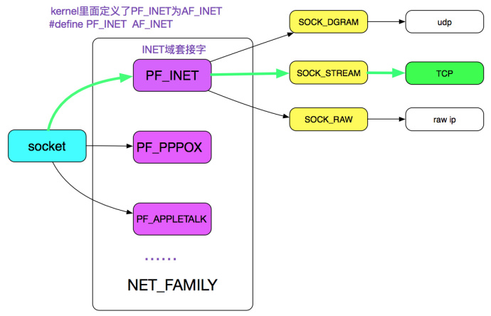
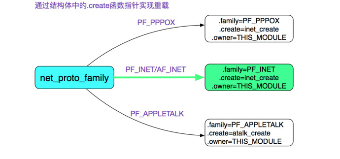
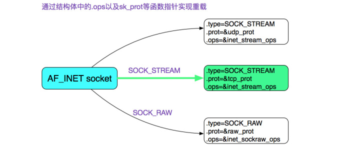
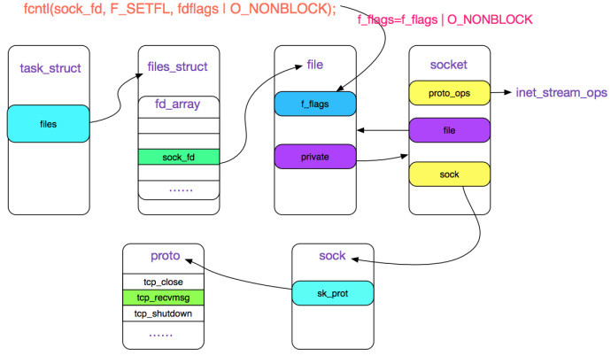
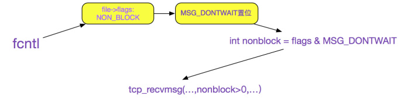
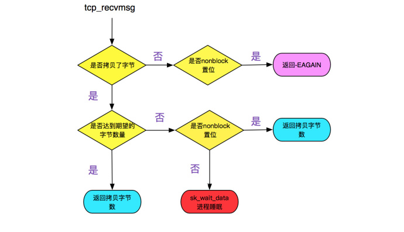
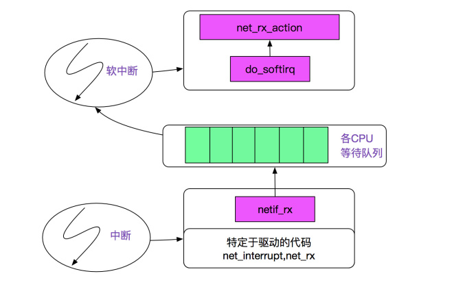

Linux NIO实现
Table of Contents
一个 TCP 非阻塞 client 端简单的例子
如果要产生一个非阻塞的 socket，在 C 语言中如下代码所示：
// 创建 socket int sock_fd = socket(AF_INET, SOCK_STREAM, 0); ... // 更改 socket 为 nonblock fcntl(sock_fd, F_SETFL, fdflags | O_NONBLOCK); // connect .... while(1) { int recvlen = recv(sock_fd, recvbuf, RECV_BUF_SIZE) ; ...... }
socket 的创建
内核的第一步应该是通过 AF_INET、SOCK_STREAM 以及最后一个参数 0 定位到需要创建一个 TCP 的 socket, 如下图绿线所示:

跟踪源码调用：
socket(AF_INET, SOCK_STREAM, 0) // |->sys_socket 进入系统调用 // |->sock_create // |->__sock_create
进一步分析__sock_create 的代码判断:
const struct net_proto_family *pf; // RCU(Read-Copy Update) 是 linux 的一种内核同步方法，在此不阐述 // family=INET pf = rcu_dereference(net_families[family]); err = pf->create(net, sock, protocol);

则通过源码可知，由于是 AF_INET(PF_INET), 所以 net_families[PF_INET].create=inet_create，即pf->create = inet_create; 进一步追溯调用:
inet_create(struct net *net, struct socket *sock, int protocol) { Sock* sock; // ...... // 此处是寻找对应协议处理器的过程 lookup_protocol: // 迭代寻找 protocol==answer->protocol 的情况 list_for_each_rcu(p, &inetsw[sock->type]); answer = list_entry(p, struct inet_protosw, list); /* Check the non-wild match. */ if (protocol == answer->protocol) { if (protocol != IPPROTO_IP) break; } //...... // 这边 answer 指的是 SOCK_STREAM sock->ops = answer->ops; answer_no_check = answer->no_check; // 这边 sk->prot 就是 answer_prot=>tcp_prot sk = sk_alloc(net, PF_INET, GFP_KERNEL, answer_prot); sock_init_data(sock, sk); //...... }
上面的代码就是在 INET 中寻找 SOCK_STREAM 的过程了 再看一下 inetsw[SOCK_STREAM] 的具体配置:
static struct inet_protosw inetsw_array[] = { { .type = SOCK_STREAM, .protocol = IPPROTO_TCP, .prot = &tcp_prot, .ops = &inet_stream_ops, .capability = -1, .no_check = 0, .flags = INET_PROTOSW_PERMANENT | INET_PROTOSW_ICSK ... }, //...... }
这边也用了重载，AF_INET 有 TCP、UDP 以及 Raw 三种:

从上述代码，可以清楚的发现 sock->ops=&inet_stream_ops;
const struct proto_ops inet_stream_ops = { .family = PF_INET, .owner = THIS_MODULE, // ...... .sendmsg = tcp_sendmsg, .recvmsg = sock_common_recvmsg, //...... }
sock->ops->recvmsg = sock_common_recvmsg; sock->sk->sk_prot = tcp_prot;
再看下 tcp_prot 中的各个函数重载的定义:
struct proto tcp_prot = { .name = "TCP", .close = tcp_close, .connect = tcp_v4_connect, .disconnect = tcp_disconnect, .accept = inet_csk_accept, // ...... // 重点考察 tcp 的读 .recvmsg = tcp_recvmsg, //...... }
fcntl 控制 socket 的阻塞状态
用 fcntl 修改 socket 的阻塞\非阻塞状态: fcntl 的作用就是将 O_NONBLOCK 标志位存储在 sock_fd 对应的 filp 结构的 f_lags 里, 如下图所示

fcntl(sock_fd, F_SETFL, fdflags | O_NONBLOCK); //|->setfl
追踪 setfl 代码:
static int setfl(int fd, struct file * filp, unsigned long arg) { //..... filp->f_flags = (arg & SETFL_MASK) | (filp->f_flags & ~SETFL_MASK); //...... }
由 sock_fd 在 task_struct(进程结构体)->files_struct->fd_array 中找到对应的 socket 的 file 描述符，再修改 file->flags
调用 socket.recv
跟踪源码调用：
socket.recv |->sys_recv |->sys_recvfrom |->sock_recvmsg |->__sock_recvmsg |->sock->ops->recvmsg
通过前面可知，sock->ops->recvmsg = sock_common_recvmsg
sock_recmsg
值得注意的是, 在 sock_recmsg 中, 有对标识 O_NONBLOCK 的处理：
if (sock->file->f_flags & O_NONBLOCK)
flags |= MSG_DONTWAIT;
上述代码中 sock 关联的 file 中获取其 f_flags, 如果 flags 有 O_NONBLOCK 标识，那么就设置 msg_flags 为 MSG_DONTWAIT(不等待)。fcntl 与 socket 就是通过其共同操作 File 结构关联起来的
sock_common_recvmsg
int sock_common_recvmsg(struct kiocb *iocb, struct socket *sock, struct msghdr *msg, size_t size, int flags) { //...... // 如果 flags 的 MSG_DONTWAIT 标识置位，则传给 recvmsg 的第 5 个参数为正, 否则为 0 err = sk->sk_prot->recvmsg(iocb, sk, msg, size, flags & MSG_DONTWAIT, flags & ~MSG_DONTWAIT, &addr_len); //..... }
sk->sk_prot->recvmsg 其中 sk_prot=tcp_prot, 即最终调用的是 tcp_prot->tcp_recvmsg
如果 fcntl(O_NONBLOCK) =>MSG_DONTWAIT 置位 => (flags & MSG_DONTWAIT)>0, 再结合 tcp_recvmsg 的函数签名, 即如果设置了 O_NONBLOCK 的话，设置给 tcp_recvmsg 的 nonblock 参数>0, 关系如下图所示:

tcp_recvmsg
tcp_recvmsg 的函数签名：
int tcp_recvmsg(struct kiocb *iocb, struct sock *sk, struct msghdr *msg, size_t len, int nonblock, int flags, int *addr_len);
关注焦点在 (int nonblock 这个参数上)：
int tcp_recvmsg(struct kiocb *iocb, struct sock *sk, struct msghdr *msg, size_t len, int nonblock, int flags, int *addr_len) { //...... // copied 是指向用户空间拷贝了多少字节，即读了多少 int copied; // target 指的是期望多少字节 int target; // 等效为 timeo = noblock ? 0 : sk->sk_rcvtimeo; timeo = sock_rcvtimeo(sk, nonblock); //...... // 如果设置了 MSG_WAITALL 标识 target=需要读的长度 // 如果未设置，则为最低低水位值 target = sock_rcvlowat(sk, flags & MSG_WAITALL, len); //...... do{ // 表明读到数据 if (copied) { // 注意，这边只要!timeo，即 nonblock 设置了就会跳出循环 if (sk->sk_err || sk->sk_state == TCP_CLOSE || (sk->sk_shutdown & RCV_SHUTDOWN) || !timeo || signal_pending(current) || (flags & MSG_PEEK)) break; } else{ // 到这里，表明没有读到任何数据 // 且 nonblock 设置了导致 timeo=0，则返回-EAGAIN, 符合我们的预期 if (!timeo) { copied = -EAGAIN; break; } // 这边如果读到了期望的数据，继续，否则当前进程阻塞在 sk_wait_data 上 if (copied >= target) { /* Do not sleep, just process backlog. */ release_sock(sk); lock_sock(sk); } else sk_wait_data(sk, &timeo); } } while (len > 0); //...... return copied; }
上面的逻辑归结起来就是：
- 在设置了 nonblock 的时候，如果 copied>0, 则返回读了多少字节, 如果 copied=0，则返回-EAGAIN, 提示应用重复调用
- 如果没有设置 nonblock，如果读取的数据>=期望，则返回读取了多少字节。如果没有则用 sk_wait_data 将当前进程等待
如下流程图所示：

sk_wait_data
// 将进程状态设置为可打断 INTERRUPTIBLE prepare_to_wait(sk->sk_sleep, &wait, TASK_INTERRUPTIBLE); set_bit(SOCK_ASYNC_WAITDATA, &sk->sk_socket->flags); // 通过调用 schedule_timeout 让出 CPU，然后进行睡眠 rc = sk_wait_event(sk, timeo, !skb_queue_empty(&sk->sk_receive_queue)); // 到这里的时候，有网络事件或超时事件唤醒了此进程，继续运行 clear_bit(SOCK_ASYNC_WAITDATA, &sk->sk_socket->flags); finish_wait(sk->sk_sleep, &wait);
该函数调用 schedule_timeout 进入睡眠，其进一步调用了 schedule 函数，首先从运行队列删除，其次加入到等待队列，最后调用和体系结构相关的 switch_to 宏来完成进程间的切换
阻塞后恢复运行
有对应的网络数据到来
网卡发起中断后调用 netif_rx 将事件挂入 CPU 的等待队列，并唤起软中断 (soft_irq)，再通过 linux 的软中断机制调用 net_rx_action，如下图所示:

跟踪 next_rx_action：
next_rx_action |->process_backlog ...... |->packet_type->func 在这里考虑 ip_rcv |->ipprot->handler 在这里 ipprot 重载为 tcp_protocol (handler 即为 tcp_v4_rcv)
紧接着 tcp_v4_rcv:
tcp_input.c
tcp_v4_rcv
|->tcp_v4_do_rcv
|->tcp_rcv_state_process
|->tcp_data_queue
|->sk->sk_data_ready=sock_def_readable
|->wake_up_interruptible
|->__wake_up
|->__wake_up_common
__wake_up_common 将停在当前 wait_queue_head_t 中的进程唤醒，即状态改为 task_running，等待 CFS 调度以进行下一步的动作
超时
在前面调用 sk_wait_event 中调用了 schedule_timeout：
fastcall signed long __sched schedule_timeout(signed long timeout) { // ...... // 设定超时的回掉函数为 process_timeout setup_timer(&timer, process_timeout, (unsigned long)current); __mod_timer(&timer, expire); // 这边让出 CPU schedule(); del_singleshot_timer_sync(&timer); timeout = expire - jiffies; out: // 返回经过了多长事件 return timeout < 0 ? 0 : timeout; }
process_timeout 函数即是将此进程重新唤醒：
static void process_timeout(unsigned long __data) { wake_up_process((struct task_struct *)__data); }